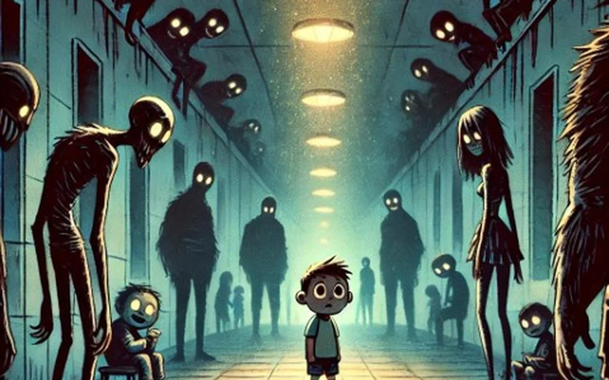
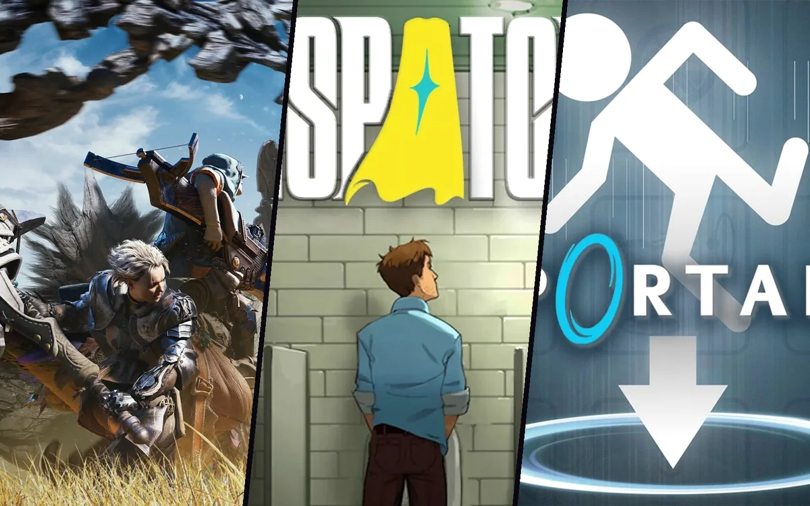

Case study · Solo
Multiplayer Structure
A design analysis of why Ravenswatch's multiplayer ends up feeling like several simultaneous solo runs, and what a roguelite built for co-op from the ground up does differently.
What it is
A design analysis essay examining why Ravenswatch's multiplayer mode, despite being marketed as a core feature, ends up feeling like several simultaneous solo runs rather than genuine cooperative play. I identify three root design failures (enemy scaling that assumes players stay grouped, a reward-distribution system that penalises splitting up to explore, and the lack of real communication tools) and use Elden Ring Nightreign, a structurally similar roguelite built for multiplayer from the ground up, as a comparison point to show how each problem can be solved.
What I did / experience gained
I conducted the analysis and wrote the essay solo, breaking down Ravenswatch's core loop and multiplayer systems to trace each source of player frustration back to a specific design decision, rather than treating them as separate, unrelated complaints. For each problem I cross-referenced Nightreign's equivalent system (boss-only scaling, character synergies, shared experience and fast travel, a forgiving revive system, multi-marker communication) to show concretely what a multiplayer-first version of the same core loop looks like.
This project sharpened my ability to diagnose systemic design problems rather than surface-level ones: recognising that the shared-lives system, the map size and the enemy scaling weren't separate issues but symptoms of the same root cause: a single-player framework extended to multiplayer without rethinking its underlying assumptions.
It also reinforced how much multiplayer design has to account for social dynamics, not just mechanical balance. A system can be perfectly fair on paper (equal scaling per player) while still generating blame, guilt and frustration between real players.
Full analysis · 10 pages
Keep going
Before and after

SystemsNarrativeGenre Hybridation
A genre hybridization exercise fusing narrative adventure and roguelike: an unnamed child with social anxiety navigating a school …
← Previous
ResearchSystemsBachelor's Final Project (BFP)
A research thesis on how the mechanical, spatial, narrative and psychological dimensions of design come together to shape a boss e…
Next →